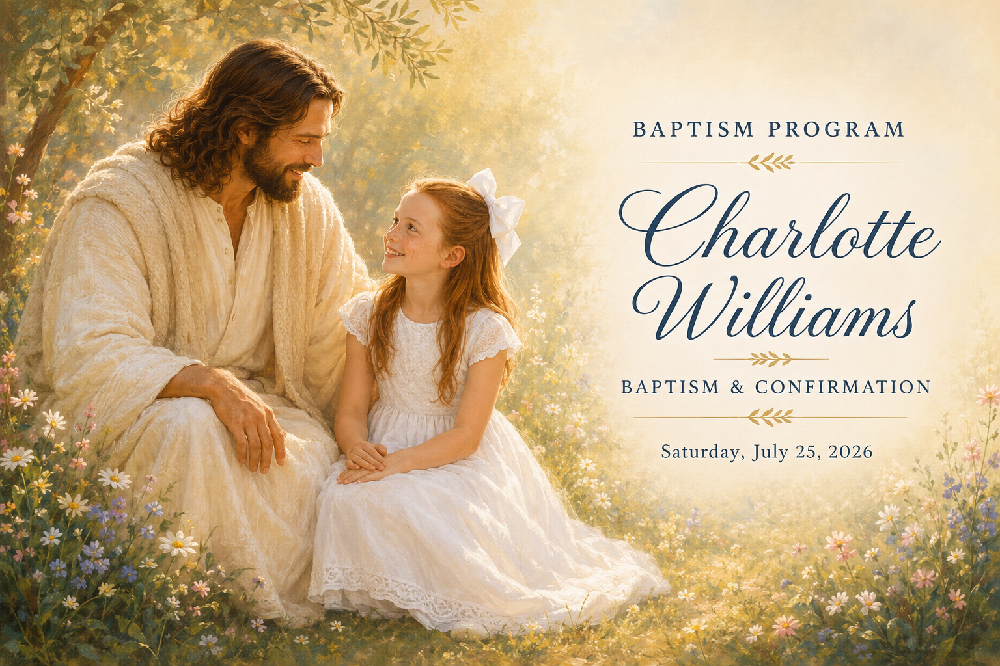

Order of Service
ConductingShawn Shepherd
PianistSusie Shepherd
ChoristerTo Be Announced
Opening Hymn
When I Am Baptized
Opening Prayer
To Be Announced
Message
Luke Williams
Musical Number
“I'm Trying to Be like Jesus”
Performed by Lilyanna Williams and Gracia Johnson
Accompanied by Amberlee Johnson
Baptism of Charlotte Williams
Time of Reverence
Quiet piano music while Charlotte changes into dry clothes.
Message
Clara Williams
Confirmation of Charlotte Williams
Closing Hymn
Love One Another
Closing Prayer
Angela Johnson Stanfield
Hymns
When I Am Baptized
Verse 1
I like to look for rainbows whenever there is rain,
And ponder on the beauty of the earth made clean again.
I want my life to be as clean as earth right after rain.
I want to be the best I can and live with God again.
Verse 2
I know when I am baptized I choose the Savior’s way,
And I will be forgiven as I turn to Him each day.
I want my life to be as clean as earth right after rain.
I want to be the best I can and live with God again.
308 — Love One Another
Reverently
As I have loved you,
Love one another.
This new commandment:
Love one another.
By this shall men know
Ye are my disciples,
If ye have love
One to another.